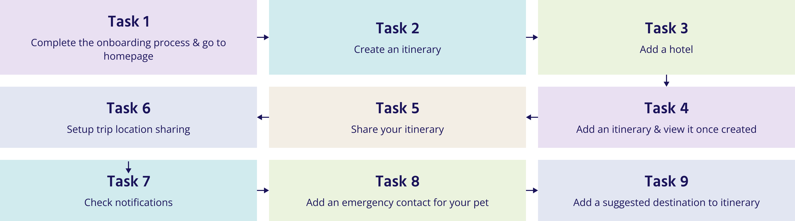

As a user researcher, I want to understand and ease the pain points of how users plan to travel in the future, post pandemic.
Create and design a mobile app that will help alleviate post-pandemic travel uncertainties by seamlessly integrating health and safety information, ensuring a worry-free and well-informed journey planning experience.
In order to help conduct this study, I first created a proto persona of what I thought the typical user would be like. From there, I created a list of about 20 questions I thought would be relevant in discovering what is important to users while planning a trip and figuring out what issues they currently have.
With these questions, I interviewed 5 people between the ages of 25 to 65 years of age. I wanted to get different age groups as it helped give perspectives on who was impacted most by the pandemic. I also looked for different family dynamics since someone single with no kids would have a different value system than someone who is married or who has a kid. Another characteristic I looked for was if they were adventurous (this is for a travel company so people who like going out and traveling have more knowledge on the topic), were they and an extrovert or introvert (I believed I wanted both types as both might have had different values or pain points while traveling).
Vacationers like going to new outdoor places and experiencing new things with their friends and family.
Travelers want to be able to book and plan nice outings, know where they are going and be able to find great new places.
Vacationers need to be able to plan everything in one place without having to spend too much time trying to figure everything out and make sure they are safe
Travelers typically use travel apps to book flights, rental cars, and to figure out their agenda while they are on their trip.
Travelers do not like when things do not have a way out, are dirty or when they are in loud crowded places. They also do not like how expensive everything has become.
Daisy, a single mother who always wants to be there for her friends and family, needs to feel more confident and secure prior to and during her trip because it is important to make sure the trip is fun for everyone and that everyone back home knows where she is and how to reach her if an emergency happens.
TravelGlass was designed to ease travelers ability to plan and take a trip. I have observed that most applications are not offering ways to work together and share current travel itineraries causing co-travelers to have out-of-sync plans, and causing friends and family to not have a way to reach travelers when urgent situations happen. How might we improve TravelGlass so that our customers are successful based on an increase in member engagement and location check ins, as well as an increase in return visits to the TravelGlass app?
TravelGlass is designed to revolutionize travel planning with an intuitive and collaborative itinerary platform which helps travelers effortlessly sync plans and quell concerns of loved ones, making every journey a worry-free adventure.
We're better because we provide traveler's with a platform to easily plan with travel partners and provide a constant stream of reassurance to loved ones, fostering a deeper sense of connection and trust throughout the journey.
We're believable because TravelGlass transparently transforms trip planning and enjoyment, authentically changing how people plan and savor their journeys.
Daisy is a single mother who wants to plan a trip with her daughter, Tiffany and her friend Carol. She wants to know that her family has a peace of mind while she and her daughter are are away and know that they know what to do if emergencies come up.
She needs:
a way to efficiently plan her trips, coordinate logistics, and manage her packed schedule to ensure that her travel experiences are smooth and stress-free
the ability to adapt her plans on the go
a platform that enables easy collaboration on itineraries, allowing everyone to contribute ideas, suggest activities, and create a balanced travel plan
a way to capture fun memories sightseeing through photos and document her experiences to relive and share with her loved ones as they happen
Maximize her time during the trip because everything is planned out
Diminish worries her loved ones might have not knowing if they are ok
Keep her loved ones informed about her current location, and keep her informed of her daughter's whereabouts if they get separated
Have a transparent, fluid plan with fellow travelers, family, or friends
Everyone is able to be involved and contributes ideas, changes, and participates simultaneously in finalizing the itinerary.
Provide suggestions of additional places to go during the user's trip in case the user is missing something good or needs something to else to do in downtime.
Allow the platform to be used offline so things like tickets can be accessed anywhere.
Provide optional reminders for activities, and check-ins when the user approaches an itinerary destination.
Integrate health and safety updates for activities on the itinerary.
Provide ratings and reviews for locations listed on the itinerary.

Find out if TravelGlass is simple to use, intuitive, and helps users create, plan, and share their trip from start to finish. Be sure that users understand the different features offered to them throughout the app.
After analyzing the feedback I received from my user tests, I was able to go back and make updates to all the high priority issues for the users and TravelGlass making the app a better experience for all involved.
Users were very excited about the prospect of this app and could see using it every time they plan a trip.
TravelGlass is a collaborative itinerary planning tool that allows users to have an organized trip from start to finish with their travel partners fully involved. TravelGlass also provides peace of mind for loved ones back home who can see the traveler's location in real-time and are notified if any delays or emergencies come up. Travelers using TravelGlass can feel at ease knowing that if an emergency situation comes up back home, someone will know who to contact.
I made a case study to show the full design process and share more information about some of the challenges I overcame.